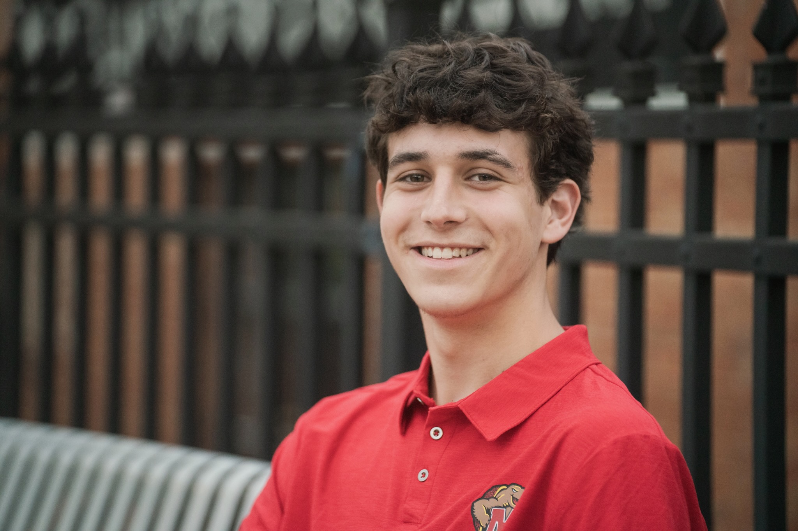

Zak Koshar
Aspiring Sports Broadcaster | Journalism Student

Experience:
Sports Broadcaster / Play-by-Play Announcer
WMUC Sports, University of Maryland
2026-present
Called a University of Maryland field hockey game for WMUC, gaining live collegiate
broadcasting experience. Provided play-by-play commentary while developing skills in
preparation, game awareness, communication, and delivering clear commentary in a
live sports environment.
Part-Time High School Announcer
Freelance
2022-2025
Called high school basketball games primarily to develop broadcasting experience and
play-by-play skills. Also announced football and soccer games and attended junior
varsity baseball games to practice live commentary. Focused on improving public
speaking, game awareness, preparation, and real-time communication.
Summer Camp Counselor
Summer Camp
Summer 2025
Supervised and mentored campers throughout daily activities while maintaining a safe,
engaging, and positive environment. Led games, team-building exercises, and outdoor
activities while promoting leadership, responsibility, and sportsmanship. Recognized as
Rookie of the Year for strong leadership, reliability, and positive impact.
Education:
- Bachelor of Arts, Journalism, University of Maryland, College Park, Expected
2029
Skills:
- Sports broadcasting and play-by-play; Experience calling collegiate and high
school sporting events.
- News writing and reporting; Experience developing accurate, professional
journalistic stories through UMD journalism coursework.
- Public speaking; Strong experience communicating clearly and confidently in live
broadcasting and presentation settings.
- Sports analysis and game awareness; Developed through broadcasting
experience and years of competitive baseball.
- Video editing and multimedia storytelling; Experience with Adobe Premiere and
digital journalism projects.
- Data analysis and SQL; Experience with PostgreSQL, SQL queries, joins,
aggregations, and ranking functions.